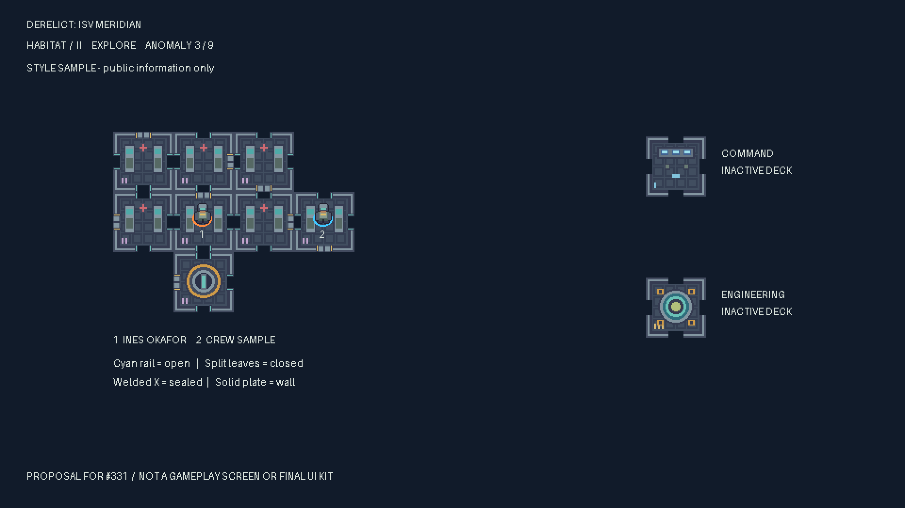

Industrial salvage. Cold metal, lived-in spaces, overhead light.
Style proposal · #331 · awaiting owner approval. Original deterministic samples, 0 generation credits. Room keys match the unmerged M1 rules in PR #316. These are four samples, not the full 50-tile set.
Each card shows a 64px source at 1×, then 2× TV scale. Hatch overlays are independent and rotate in 90° steps. Decks carry I / II / III marks as well as distinct accents.
24×24 frames, feet anchor (12,22), 6fps. Reduced-motion preference shows a still frame.
1:1 native pixels. Scroll inside this panel on smaller screens. This is a concept mock, not the implemented game or a physical-TV test.

Review issue #331 · Style and file contract · Exact palette ramps